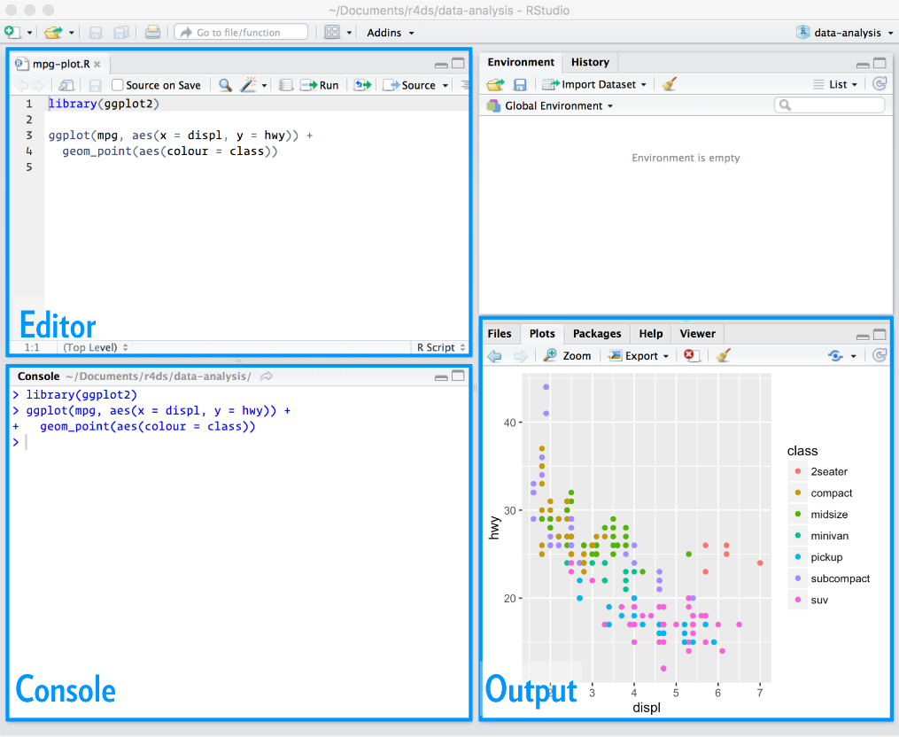
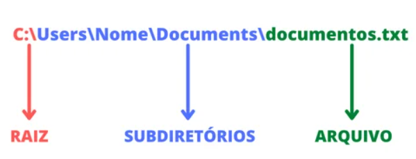
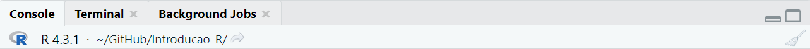
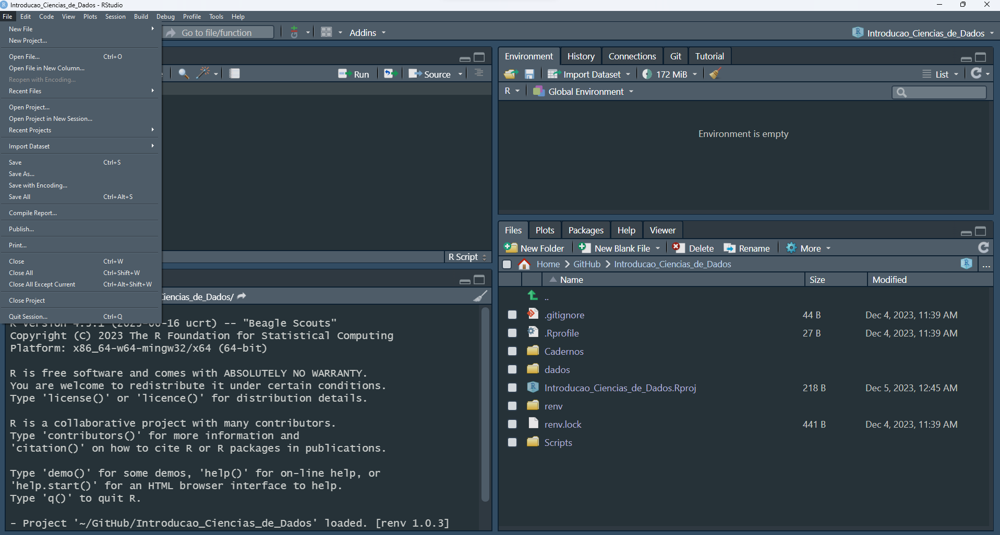
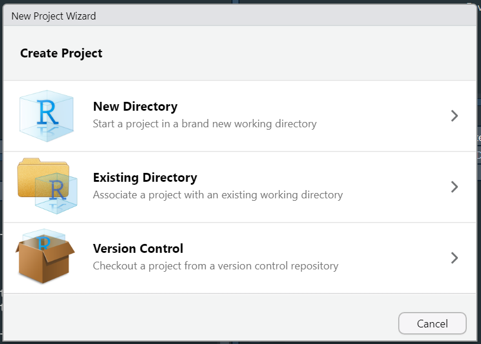
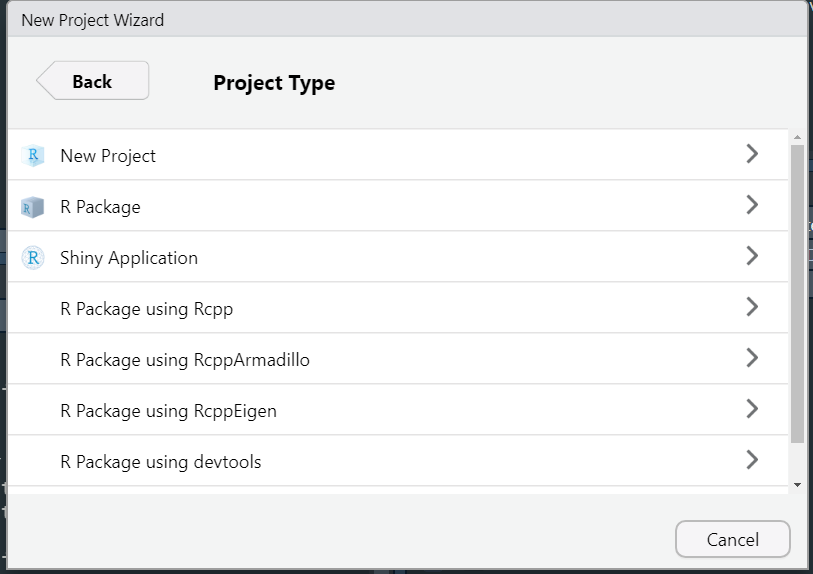
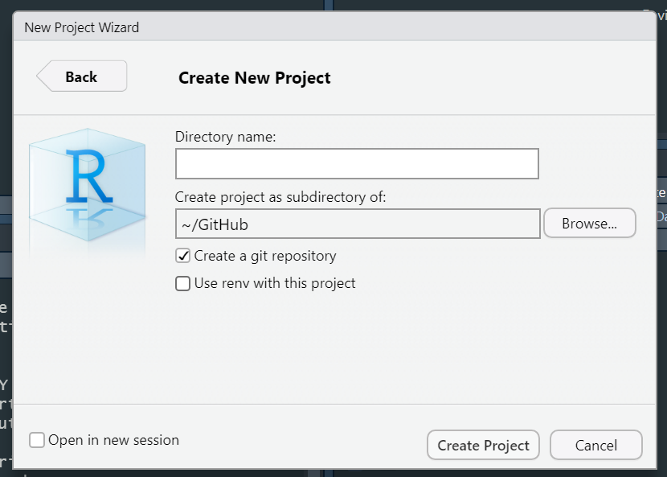
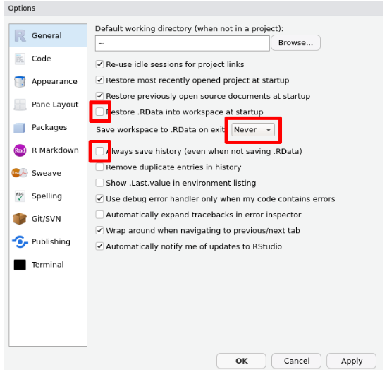
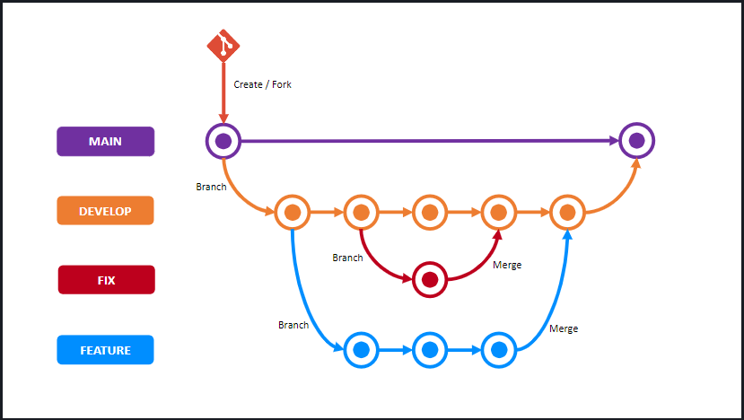

getwd()[1] "C:/Users/Leonardo_Nascimento/Documents/GitHub/webpage/Cursos/Introducao_R/Cadernos"R é uma linguagem e um ambiente de desenvolvimento integrado, livre e gratuito;
O software R disponibiliza recursos para vários tipos de análises:
Estatística descritiva: medidas de posição, dispersão, tabelas e gráficos;
Modelos lineares, não lineares, generalizados: estimação dos parâmetros, resíduos, métodos de diagnóstico;
Análise multivariada: Análise de componentes principais, clusters, fatorial;
Aprendizado de Máquina
DeepLearning,
O RStudio é uma interface de desenvolvimento integrada (IDE) para a linguagem de programação R;
Diferentemente do R em que todas as versões são gratuitas, o RStudio disponibiliza versões gratuitas e versões pagas.
O vs code é outra IDE que permite utilizar códigos R.
A seguir é apresentado os passos para instalação do R para o sistema operacional Windows. Para outros sistemas operacionais, clique aqui
Passo a passo de instalação do R para Windows:
Acesse o site do CRAN (Comprehensive R Archive Network) para Windows aqui
Baixe a versão mais recente do R para Windows.
Execute o instalador e siga as instruções para completar a instalação.
Passo a passo de instalação do RStudio
O RStudio é uma IDE (Integrated Development Environment) para a linguagem R que oferece uma interface e ferramentas adicionais:
Acesse o site de download do RStudio aqui
Baixe a versão do RStudio Desktop correspondente ao seu sistema operacional.
Execute o instalador e siga as instruções para completar a instalação.

Console:
Script Editor:
Environment/Painel de Ambiente:
History/Histórico:
Files/Painel de Arquivos:
Plots/Painel de Gráficos:
Packages/Pacotes:
Help/Ajuda:
Viewer/Visualizador:
Git:
Connections/Conexões:
Terminal:
As “cheatsheets” (folhas de dicas) no RStudio são recursos visuais e resumidos que fornecem informações rápidas e úteis sobre tópicos específicos relacionados à linguagem de programação R, ao ambiente RStudio e a pacotes específicos do R.
Para acessar as cheatsheets, você pode ir diretamente à página de cheatsheets do RStudio
Também pode ser acessada cliclando em Help -> Cheat Sheets
Entende-se por caminho o endereço do arquivo no computador
Existem duas formas de passarmos o caminho de arquivo: caminho absoluto ou caminho relativo
O caminho absoluto especifica o local exato de um arquivo desde a raiz do sistema de arquivo.
O diretório raiz é o que está no topo da hierarquia do sistema, isso significa que outros diretórios estão contidos nele.

getwd()[1] "C:/Users/Leonardo_Nascimento/Documents/GitHub/webpage/Cursos/Introducao_R/Cadernos"O caminho relativo é especificado em relação ao diretório de trabalho atual ou a outro local de referência. Assim, se você quiser acessar alguma base de dados na pasta “dados” partindo da pasta”Cadernos”, o caminho seria: ../dados/base_de_dados.formato.
Nesse caso, ../ é o comando para voltar uma pasta dentro do caminho e ./ representa a pasta/diretório atual.
Caso você queira trocar o local referência da pasta “caderno” para a pasta”Introducao_R “, use o seguinte código:
setwd("..") # trocando local referência ou diretório de trabalho
getwd()[1] "C:/Users/Leonardo_Nascimento/Documents/GitHub/webpage/Cursos/Introducao_R"Basicamente, diretório de trabalho refere-se a uma pasta específica no sistema de arquivos do computador em que um programa está atualmente operando ou onde ele procura por arquivos para ler e salvar por padrão.
No contexto do R, o diretório de trabalho é particularmente importante porque é o local onde o R procura por arquivos . Isso significa que, se você carregar ou salvar um arquivo sem especificar a pasta, o R assumirá que o arquivo está no diretório de trabalho.
É no diretório de trabalho que o R procura os arquivos que você pede para carregar e onde ele coloca todos os arquivos que você pede para salvar. De forma geral, é o local que está localizada sua análise.
RStudio mostra seu diretório de trabalho atual na parte superior do console:

Você também pode visualizar o diretório de trabalho atual usando a função getwd().
Você também pode definir o diretório de trabalho dentro do R utilizando a
função setwd("colocar_o_caminho").
Caminhos e diretórios são um pouco complicados porque existem dois estilos básicos de caminhos: Mac/Linux e Windows. Existem três maneiras principais pelas quais eles diferem
Como você separa os componentes do caminho. Mac e Linux usam barras (por exemplo plots/diamonds.pdf) e o Windows usa barras invertidas (por exemplo plots\diamonds.pdf). R pode funcionar com qualquer tipo. Porém, barras invertidas significam algo especial para R, e para obter uma única barra invertida no caminho, você precisa digitar duas barras invertidas! Recomendo sempre usar o estilo Linux/Mac com barras.
Ao criar scripts ou projetos em R, é uma boa prática usar caminhos relativos, pois isso torna o código mais portátil e facilita a colaboração. Além disso, evita problemas quando você compartilha seu código com outros ou move seu projeto para um novo sistema operacional.
A última pequena diferença é o local para onde ~aponta. ~é um atalho conveniente para o seu diretório inicial. No Windows, ele aponta para o diretório de documentos.
Nesses casos, criar projetos no R é uma prática recomendada e traz vários benefícios para a organização, colaboração e reprodutibilidade do trabalho
Crie um diretório onde você possa colocar todos os programas/projetos em R
Projetos no RStudio são uma maneira organizada e estruturada de trabalhar em análises de dados e programação em R ou em qualquer linguagem de programação suportada pelo RStudio.
Aqui estão algumas razões pelas quais criar projetos no RStudio é importante:
Organização Estruturada:
Reprodutibilidade:
Configuração do Diretório de Trabalho:
Controle de Versão:
Ambiente Isolado:
A seguir são apresentados alguns passos para criar um projeto no RStudio.
Passo 1: Abra o RStudio
Passo 2: Crie um Novo Projeto

Passo 3: Escolha o Tipo de Projeto
New Directory (Novo Diretório): Cria um novo diretório para o projeto.
Existing Directory (Diretório Existente): Usa um diretório existente como projeto.

Passo 4: Escolha um Modelo

Passo 5: Nomeie e Localize o Projeto

Passo 6: Clique em “Create Project”
Após criar o projeto, você verá a estrutura do diretório do projeto no painel inferior direito do RStudio.
Organize seus Arquivos. Dentro do diretório do projeto, você pode criar subdiretórios (por exemplo, “data”, “scripts”, “reports”) para organizar seus arquivos.
Tudo o que você precisa está em um só lugar e bem separado de todos os outros projetos nos quais você está trabalhando.
Basicamente, podemos definir uma pesquisa reproduzível como uma pesquisa que documenta todas as etapas entre os dados brutos e os resultados de uma forma que possa ser verificada.
Isso envolve escrever scripts que realizem algumas análises do início ao fim de forma completa e transparente, de maneira que produza o mesmo resultado para pessoas diferentes usando o mesmo software em computadores diferentes.
Nesse caso, é recomendado realizar dois ajustes na configuração do RStudio para maximizar a reprodutibilidade. Será desabilitado .RData e .Rhistory.
O primeiro armazena todos os objetos gerados durante uma sessão R, enquanto o segundo mantém uma lista dos comandos mais recentemente executados.
Ao reabrir o RStudio, o conteúdo desses arquivos é carregado no ambiente de trabalho atual, proporcionando a sensação de continuidade.
Selecione Tools > Global Options… na aba de ferramentas do RStudio e então ajustar as configurações.
A página de configurações gerais deve apresentar semelhanças com a imagem a seguir:

Plataforma online que utiliza o RStudio para auxiliar na análise de dados ou outras finalidades.
Para acessá-la, clique aqui.
Para criar um projeto:

Git é um sistema de controle de versão que permite rastrear as alterações no código durante o desenvolvimento de uma análise/software.
Git é usado para gerenciar projetos de análise/software, controlar as versões do código e facilitar o trabalho colaborativo entre desenvolvedores.
Cada cópia do repositório Git contém todo o histórico de revisões.
Permite a criação de ramificações independentes para o desenvolvimento de novos recursos e a fusão posterior dessas ramificações.
O Git também pode se conectar a um serviço de hospedagem e armazenar todas as versões de um código fora do seu computador; o mais utilizado atualmente se chama GitHub. Uma alternativa é o GitLab.
GitHub oferece funcionalidades adicionais, como controle de acesso, rastreamento de problemas, integração contínua e colaboração eficiente.
Desenvolvedores usam o GitHub para compartilhar código, colaborar em projetos e contribuir para repositórios de código aberto.

Na prática, a utilização do Git e do GitHub tem dois principais benefícios:
Livrar-se da necessidade de controlar versões com arquivos como analise.R, analise_v2.R, analise_v3.R, analise_final.R, analise_final_final.R, analise_final_revisada.R
Eliminar a preocupação de perder seus projetos devido a falhas no seu computador.
Organize o Projeto:
Mantenha um diretório de projeto bem estruturado.
Use subdiretórios para dados brutos, scripts, figuras e relatórios.
Documente Seu Código:
Adicione comentários claros e informativos ao seu código.
Use R Markdown ou Notebooks R para incorporar narrativa com o código.
Versione Seu Código:
Use um sistema de controle de versão como o Git para controlar as mudanças no seu código.
Inclua um arquivo .gitignore para evitar a inclusão de arquivos desnecessários no repositório.
Em SemVer (Semantic Versioning) apresenta o padrão de versionamentos. Irei apresentar na seção de Pacotes.
Compartilhe Seu Código e Dados: